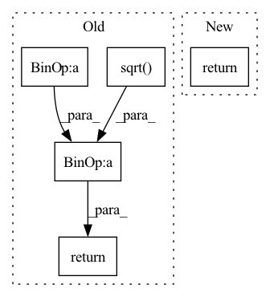

Pattern ID :2060
Before Change
num_elements = mask.sum(dim=2, keepdim=True).detach()
x_mean = x.sum(dim=2, keepdim=True).detach() / num_elements
numerator = (x - x_mean).pow(2).sum(dim=2, keepdim=True).detach()
x_std = (numerator / num_elements).sqrt()
// make sure x_std is not zero
x_std += self.div_guard
result = (x - x_mean) / x_std
return torch.masked_fill(result, ~mask, 0.0)
class DitherAudio(nn.Module):After Change
// https://github.com/pytorch/pytorch/issues/44768
with torch.no_grad():
mask = x.abs() > 0.0
return normalize_tensor(x, mask, div_guard=self.div_guard)
class DitherAudio(nn.Module):In pattern: SUPERPATTERN
Frequency: 4
Non-data size: 5
Instances Fragment ID: 7508082
Project Name: scart97/thunder-speech
Commit Name: 03fe277cc84be5cbcd6ee18db71068cb291c505f
Time: 2021-11-30
Author: scart.lucas@gmail.com
File Name: src/thunder/quartznet/transform.py
M Class Name: FeatureBatchNormalizer
N Class Name: FeatureBatchNormalizer
M Method Name: forward(2)
N Method Name: forward(2)
M Parent Class: nn.Module
N Parent Class: nn.Module
M File Name: src/thunder/quartznet/transform.py
N File Name: src/thunder/quartznet/transform.py
M Start Line: 76
M End Line: 84
N Start Line: 77
N End Line: 82
Before Change
// [*]
// norm_denom = torch.sqrt(sum(torch.unbind(quats ** 2, dim=-1)) + 1)
norm_denom = torch.sqrt( torch.sum(quats ** 2, dim=-1) + 1)
// [*, 3]
ones = s.new_ones((1,) * len(quats.shape)).expand(
quats.shape[:-1] + (1,)
)
// [*, 4]
quats = torch.cat([ones, quats], dim=-1)
quats = quats / norm_denom[..., None]
// [*, 3, 3]
rots = quat_to_rot(quats)
return T(rots, trans)
class StructureModuleTransitionLayer(nn.Module):After Change
// [*, 6]
update = self.linear(s)
return update
class StructureModuleTransitionLayer(nn.Module): Fragment ID: 7508086
Project Name: aqlaboratory/openfold
Commit Name: e3daf724458ee96ec49cfd1a040ce28adce2cb53
Time: 2022-01-03
Author: gahdritz@gmail.com
File Name: openfold/model/structure_module.py
M Class Name: BackboneUpdate
N Class Name: BackboneUpdate
M Method Name: forward(2)
N Method Name: forward(2)
M Parent Class: nn.Module
N Parent Class: nn.Module
M File Name: openfold/model/structure_module.py
N File Name: openfold/model/structure_module.py
M Start Line: 395
M End Line: 424
N Start Line: 395
N End Line: 405
Before Change
def forward(self, x):
var = torch.var(x, dim = -1, unbiased = False, keepdim = True)
mean = torch.mean(x, dim = -1, keepdim = True)
return (x - mean) / (var + self.eps).sqrt() * self.g
// parallel with residual
// discovered by Wang et al + EleutherAI from GPT-J fameAfter Change
self.register_buffer("beta", torch.zeros(dim))
def forward(self, x):
return F.layer_norm(x, x.shape[-1:], self.gamma, self.beta)
// parallel with residual
// discovered by Wang et al + EleutherAI from GPT-J fame Fragment ID: 7508068
Project Name: lucidrains/palm-pytorch
Commit Name: 0832087f78006c10d52c0600c7377c5929568e0b
Time: 2022-04-04
Author: lucidrains@gmail.com
File Name: palm_pytorch/palm_pytorch.py
M Class Name: LayerNorm
N Class Name: LayerNorm
M Method Name: forward(2)
N Method Name: forward(2)
M Parent Class: nn.Module
N Parent Class: nn.Module
M File Name: palm_pytorch/palm_pytorch.py
N File Name: palm_pytorch/palm_pytorch.py
M Start Line: 18
M End Line: 20
N Start Line: 19
N End Line: 19
Before Change
* torch.clamp(x, min=-self.clip_threshold, max=self.clip_threshold) + self.running_mean.float()
// standardization by centering and scaling
else:
return torch.clamp((x - self.running_mean.float()) / (torch.sqrt( self.running_variance.float()) + self.epsilon),
min=-self.clip_threshold, max=self.clip_threshold)After Change
if no_grad:
with torch.no_grad():
return self._compute(x, train, inverse)
else:
return self._compute(x, train, inverse) Fragment ID: 7508073
Project Name: toni-sm/skrl
Commit Name: 3ff78a027e492182b7e8d539ce2233a89cdf9bc0
Time: 2022-07-08
Author: toni.semu@gmail.com
File Name: skrl/resources/preprocessors/torch/running_standard_scaler.py
M Class Name: RunningStandardScaler
N Class Name: RunningStandardScaler
M Method Name: forward(5)
N Method Name: forward(4)
M Parent Class: nn.Module
N Parent Class: nn.Module
M File Name: skrl/resources/preprocessors/torch/running_standard_scaler.py
N File Name: skrl/resources/preprocessors/torch/running_standard_scaler.py
M Start Line: 122
M End Line: 132
N Start Line: 115
N End Line: 150